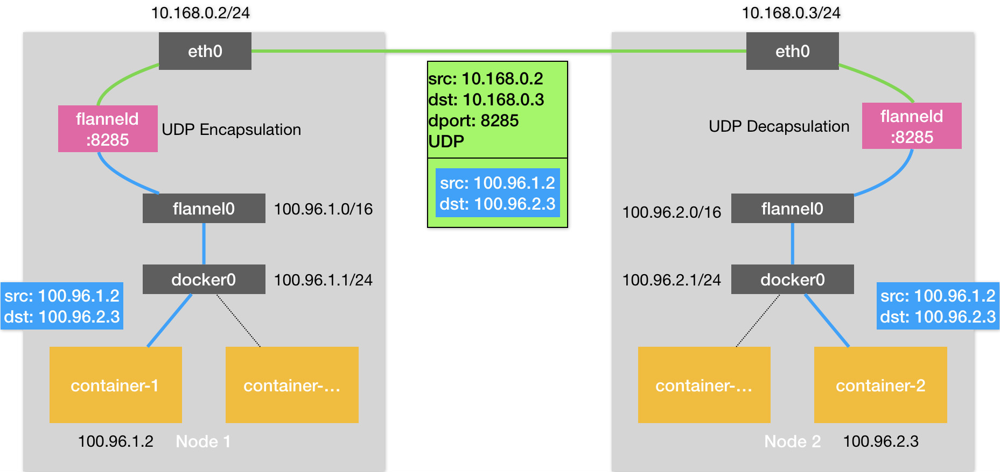
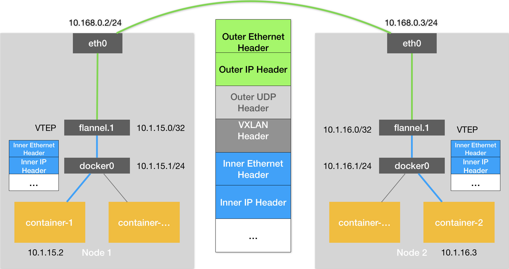
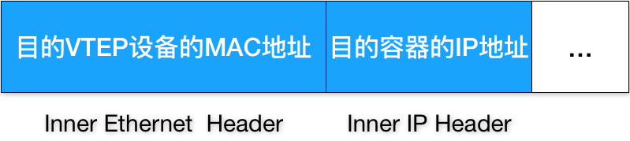
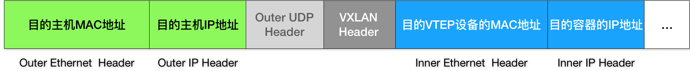

# 深入解析容器跨主机网络
在上一篇文章中，我为你详细讲解了在单机环境下，Linux 容器网络的实现原理（网桥模式）。并且提到了，在 Docker 的默认配置下，不同宿主机上的容器通过 IP 地址进行互相访问是根本做不到的。
而正是为了解决这个容器 “跨主通信” 的问题，社区里才出现了那么多的容器网络方案。而且，相信你一直以来都有这样的疑问：这些网络方案的工作原理到底是什么？
要理解容器 “跨主通信” 的原理，就一定要先从 Flannel 这个项目说起。
Flannel 项目是 CoreOS 公司主推的容器网络方案。事实上，Flannel 项目本身只是一个框架，真正为我们提供容器网络功能的，是 Flannel 的后端实现。目前，Flannel 支持三种后端实现，分别是：
- VXLAN；
- host-gw；
- UDP。
这三种不同的后端实现，正代表了三种容器跨主网络的主流实现方法。其中，host-gw 模式，我会在下一篇文章中再做详细介绍。
而 UDP 模式，是 Flannel 项目最早支持的一种方式，却也是性能最差的一种方式。所以，这个模式目前已经被弃用。不过，Flannel 之所以最先选择 UDP 模式，就是因为这种模式是最直接、也是最容易理解的容器跨主网络实现。
所以，在今天这篇文章中， 我会先从 UDP 模式开始，来为你讲解容器“跨主网络”的实现原理。
在这个例子中，我有两台宿主机。
宿主机 Node 1 上有一个容器 container-1，它的 IP 地址是 100.96.1.2，对应的 docker0 网桥的地址是：100.96.1.1/24。
宿主机 Node 2 上有一个容器 container-2，它的 IP 地址是 100.96.2.3，对应的 docker0 网桥的地址是：100.96.2.1/24。
我们现在的任务，就是让 container-1 访问 container-2。
这种情况下，container-1 容器里的进程发起的 IP 包，其源地址就是 100.96.1.2，目的地址就是 100.96.2.3。由于目的地址 100.96.2.3 并不在 Node 1 的 docker0 网桥的网段里，所以这个 IP 包会被交给默认路由规则，通过容器的网关进入 docker0 网桥（如果是同一台宿主机上的容器间通信，走的是直连规则），从而出现在宿主机上。
这时候，这个 IP 包的下一个目的地，就取决于宿主机上的路由规则了。此时，Flannel 已经在宿主机上创建出了一系列的路由规则，以 Node 1 为例，如下所示：
# 在Node 1上
$ ip route
default via 10.168.0.1 dev eth0
100.96.0.0/16 dev flannel0 proto kernel scope link src 100.96.1.0
100.96.1.0/24 dev docker0 proto kernel scope link src 100.96.1.1
10.168.0.0/24 dev eth0 proto kernel scope link src 10.168.0.2
可以看到，由于我们的 IP 包的目的地址是 100.96.2.3，它匹配不到本机 docker0 网桥对应的 100.96.1.0/24 网段，只能匹配到第二条、也就是 100.96.0.0/16 对应的这条路由规则，从而进入到一个叫作 flannel0 的设备中。
而这个 flannel0 设备的类型就比较有意思了：它是一个 TUN 设备（Tunnel 设备）。
在 Linux 中，TUN 设备是一种工作在三层（Network Layer）的虚拟网络设备。TUN 设备的功能非常简单，即：在操作系统内核和用户应用程序之间传递 IP 包。
以 flannel0 设备为例：像上面提到的情况，当操作系统将一个 IP 包发送给 flannel0 设备之后，flannel0 就会把这个 IP 包，交给创建这个设备的应用程序，也就是 Flannel 进程。这是一个从内核态（Linux 操作系统）向用户态（Flannel 进程）的流动方向。
反之，如果 Flannel 进程向 flannel0 设备发送了一个 IP 包，那么这个 IP 包就会出现在宿主机网络栈中，然后根据宿主机的路由表进行下一步处理。这是一个从用户态向内核态的流动方向。
所以，当 IP 包从容器经过 docker0 出现在宿主机，然后又根据路由表进入 flannel0 设备后，宿主机上的 flanneld 进程（Flannel 项目在每个宿主机上的主进程），就会收到这个 IP 包。然后，flanneld 看到了这个 IP 包的目的地址，是 100.96.2.3，就把它发送给了 Node 2 宿主机。
等一下，flanneld 又是如何知道这个 IP 地址对应的容器，是运行在 Node 2 上的呢？
这里，就用到了 Flannel 项目里一个非常重要的概念：子网（Subnet）。
事实上，在由 Flannel 管理的容器网络里，一台宿主机上的所有容器，都属于该宿主机被分配的一个 “子网”。在我们的例子中，Node 1 的子网是 100.96.1.0/24，container-1 的 IP 地址是 100.96.1.2。Node 2 的子网是 100.96.2.0/24，container-2 的 IP 地址是 100.96.2.3。
而这些子网与宿主机的对应关系，正是保存在 Etcd 当中，如下所示：
$ etcdctl ls /coreos.com/network/subnets
/coreos.com/network/subnets/100.96.1.0-24
/coreos.com/network/subnets/100.96.2.0-24
/coreos.com/network/subnets/100.96.3.0-24
所以，flanneld 进程在处理由 flannel0 传入的 IP 包时，就可以根据目的 IP 的地址（比如 100.96.2.3），匹配到对应的子网（比如 100.96.2.0/24），从 Etcd 中找到这个子网对应的宿主机的 IP 地址是 10.168.0.3，如下所示：
$ etcdctl get /coreos.com/network/subnets/100.96.2.0-24
{"PublicIP":"10.168.0.3"}
而对于 flanneld 来说，只要 Node 1 和 Node 2 是互通的，那么 flanneld 作为 Node 1 上的一个普通进程，就一定可以通过上述 IP 地址（10.168.0.3）访问到 Node 2，这没有任何问题。
所以说，flanneld 在收到 container-1 发给 container-2 的 IP 包之后，就会把这个 IP 包直接封装在一个 UDP 包里，然后发送给 Node 2。不难理解，这个 UDP 包的源地址，就是 flanneld 所在的 Node 1 的地址，而目的地址，则是 container-2 所在的宿主机 Node 2 的地址。
当然，这个请求得以完成的原因是，每台宿主机上的 flanneld，都监听着一个 8285 端口，所以 flanneld 只要把 UDP 包发往 Node 2 的 8285 端口即可。
通过这样一个普通的、宿主机之间的 UDP 通信，一个 UDP 包就从 Node 1 到达了 Node 2。而 Node 2 上监听 8285 端口的进程也是 flanneld，所以这时候，flanneld 就可以从这个 UDP 包里解析出封装在里面的、container-1 发来的原 IP 包。
而接下来 flanneld 的工作就非常简单了：flanneld 会直接把这个 IP 包发送给它所管理的 TUN 设备，即 flannel0 设备。
根据我前面讲解的 TUN 设备的原理，这正是一个从用户态向内核态的流动方向（Flannel 进程向 TUN 设备发送数据包），所以 Linux 内核网络栈就会负责处理这个 IP 包，具体的处理方法，就是通过本机的路由表来寻找这个 IP 包的下一步流向。
而 Node 2 上的路由表，跟 Node 1 非常类似，如下所示：
# 在Node 2上
$ ip route
default via 10.168.0.1 dev eth0
100.96.0.0/16 dev flannel0 proto kernel scope link src 100.96.2.0
100.96.2.0/24 dev docker0 proto kernel scope link src 100.96.2.1
10.168.0.0/24 dev eth0 proto kernel scope link src 10.168.0.3
由于这个 IP 包的目的地址是 100.96.2.3，它跟第三条、也就是 100.96.2.0/24 网段对应的路由规则匹配更加精确。所以，Linux 内核就会按照这条路由规则，把这个 IP 包转发给 docker0 网桥。
接下来的流程，就如同我在上一篇文章《浅谈容器网络》中和你分享的那样，docker0 网桥会扮演二层交换机的角色，将数据包发送给正确的端口，进而通过 Veth Pair 设备进入到 container-2 的 Network Namespace 里。
而 container-2 返回给 container-1 的数据包，则会经过与上述过程完全相反的路径回到 container-1 中。
需要注意的是，上述流程要正确工作还有一个重要的前提，那就是 docker0 网桥的地址范围必须是 Flannel 为宿主机分配的子网。这个很容易实现，以 Node 1 为例，你只需要给它上面的 Docker Daemon 启动时配置如下所示的 bip 参数即可：
$ FLANNEL_SUBNET=100.96.1.1/24
$ dockerd --bip=$FLANNEL_SUBNET ...
以上，就是基于 Flannel UDP 模式的跨主通信的基本原理了。我把它总结成了一幅原理图，如下所示。

图 1 基于 Flannel UDP 模式的跨主通信的基本原理
可以看到，Flannel UDP 模式提供的其实是一个三层的 Overlay 网络，即：它首先对发出端的 IP 包进行 UDP 封装，然后在接收端进行解封装拿到原始的 IP 包，进而把这个 IP 包转发给目标容器。这就好比，Flannel 在不同宿主机上的两个容器之间打通了一条 “隧道”，使得这两个容器可以直接使用 IP 地址进行通信，而无需关心容器和宿主机的分布情况。
我前面曾经提到，上述 UDP 模式有严重的性能问题，所以已经被废弃了。通过我上面的讲述，你有没有发现性能问题出现在了哪里呢？
实际上，相比于两台宿主机之间的直接通信，基于 Flannel UDP 模式的容器通信多了一个额外的步骤，即 flanneld 的处理过程。而这个过程，由于使用到了 flannel0 这个 TUN 设备，仅在发出 IP 包的过程中，就需要经过三次用户态与内核态之间的数据拷贝，如下所示：

图 2 TUN 设备示意图
我们可以看到：
第一次，用户态的容器进程发出的 IP 包经过 docker0 网桥进入内核态；
第二次，IP 包根据路由表进入 TUN（flannel0）设备，从而回到用户态的 flanneld 进程；
第三次，flanneld 进行 UDP 封包之后重新进入内核态，将 UDP 包通过宿主机的 eth0 发出去。
此外，我们还可以看到，Flannel 进行 UDP 封装（Encapsulation）和解封装（Decapsulation）的过程，也都是在用户态完成的。在 Linux 操作系统中，上述这些上下文切换和用户态操作的代价其实是比较高的，这也正是造成 Flannel UDP 模式性能不好的主要原因。
所以说，我们在进行系统级编程的时候，有一个非常重要的优化原则，就是要减少用户态到内核态的切换次数，并且把核心的处理逻辑都放在内核态进行。这也是为什么，Flannel 后来支持的 VXLAN 模式，逐渐成为了主流的容器网络方案的原因。
VXLAN，即 Virtual Extensible LAN（虚拟可扩展局域网），是 Linux 内核本身就支持的一种网络虚似化技术。所以说，VXLAN 可以完全在内核态实现上述封装和解封装的工作，从而通过与前面相似的 “隧道” 机制，构建出覆盖网络（Overlay Network）。
VXLAN 的覆盖网络的设计思想是：在现有的三层网络之上，“覆盖” 一层虚拟的、由内核 VXLAN 模块负责维护的二层网络，使得连接在这个 VXLAN 二层网络上的 “主机”（虚拟机或者容器都可以）之间，可以像在同一个局域网（LAN）里那样自由通信。当然，实际上，这些 “主机” 可能分布在不同的宿主机上，甚至是分布在不同的物理机房里。
而为了能够在二层网络上打通 “隧道”，VXLAN 会在宿主机上设置一个特殊的网络设备作为 “隧道” 的两端。这个设备就叫作 VTEP，即：VXLAN Tunnel End Point（虚拟隧道端点）。
而 VTEP 设备的作用，其实跟前面的 flanneld 进程非常相似。只不过，它进行封装和解封装的对象，是二层数据帧（Ethernet frame）；而且这个工作的执行流程，全部是在内核里完成的（因为 VXLAN 本身就是 Linux 内核中的一个模块）。
上述基于 VTEP 设备进行 “隧道” 通信的流程，我也为你总结成了一幅图，如下所示：

图 3 基于 Flannel VXLAN 模式的跨主通信的基本原理
可以看到，图中每台宿主机上名叫 flannel.1 的设备，就是 VXLAN 所需的 VTEP 设备，它既有 IP 地址，也有 MAC 地址。
现在，我们的 container-1 的 IP 地址是 10.1.15.2，要访问的 container-2 的 IP 地址是 10.1.16.3。
那么，与前面 UDP 模式的流程类似，当 container-1 发出请求之后，这个目的地址是 10.1.16.3 的 IP 包，会先出现在 docker0 网桥，然后被路由到本机 flannel.1 设备进行处理。也就是说，来到了 “隧道” 的入口。为了方便叙述，我接下来会把这个 IP 包称为 “原始 IP 包”。
为了能够将 “原始 IP 包” 封装并且发送到正确的宿主机，VXLAN 就需要找到这条 “隧道” 的出口，即：目的宿主机的 VTEP 设备。
而这个设备的信息，正是每台宿主机上的 flanneld 进程负责维护的。
比如，当 Node 2 启动并加入 Flannel 网络之后，在 Node 1（以及所有其他节点）上，flanneld 就会添加一条如下所示的路由规则：
$ route -n
Kernel IP routing table
Destination Gateway Genmask Flags Metric Ref Use Iface
...
10.1.16.0 10.1.16.0 255.255.255.0 UG 0 0 0 flannel.1
这条规则的意思是：凡是发往 10.1.16.0/24 网段的 IP 包，都需要经过 flannel.1 设备发出，并且，它最后被发往的网关地址是：10.1.16.0。
从图 3 的 Flannel VXLAN 模式的流程图中我们可以看到，10.1.16.0 正是 Node 2 上的 VTEP 设备（也就是 flannel.1 设备）的 IP 地址。
为了方便叙述，接下来我会把 Node 1 和 Node 2 上的 flannel.1 设备分别称为 “源 VTEP 设备” 和 “目的 VTEP 设备”。
而这些 VTEP 设备之间，就需要想办法组成一个虚拟的二层网络，即：通过二层数据帧进行通信。
所以在我们的例子中，“源 VTEP 设备” 收到 “原始 IP 包” 后，就要想办法把 “原始 IP 包” 加上一个目的 MAC 地址，封装成一个二层数据帧，然后发送给 “目的 VTEP 设备”（当然，这么做还是因为这个 IP 包的目的地址不是本机）。
这里需要解决的问题就是：“目的 VTEP 设备” 的 MAC 地址是什么？
此时，根据前面的路由记录，我们已经知道了 “目的 VTEP 设备” 的 IP 地址。而要根据三层 IP 地址查询对应的二层 MAC 地址，这正是 ARP（Address Resolution Protocol ）表的功能。
而这里要用到的 ARP 记录，也是 flanneld 进程在 Node 2 节点启动时，自动添加在 Node 1 上的。我们可以通过 ip 命令看到它，如下所示：
# 在Node 1上
$ ip neigh show dev flannel.1
10.1.16.0 lladdr 5e:f8:4f:00:e3:37 PERMANENT
这条记录的意思非常明确，即：IP 地址 10.1.16.0，对应的 MAC 地址是 5e:f8:4f:00:e3:37。
可以看到，最新版本的 Flannel 并不依赖 L3 MISS 事件和 ARP 学习，而会在每台节点启动时把它的 VTEP 设备对应的 ARP 记录，直接下放到其他每台宿主机上。
有了这个 “目的 VTEP 设备” 的 MAC 地址，**Linux 内核就可以开始二层封包工作了。** 这个二层帧的格式，如下所示：

图 4 Flannel VXLAN 模式的内部帧
可以看到，Linux 内核会把 “目的 VTEP 设备” 的 MAC 地址，填写在图中的 Inner Ethernet Header 字段，得到一个二层数据帧。
需要注意的是，上述封包过程只是加一个二层头，不会改变 “原始 IP 包” 的内容。所以图中的 Inner IP Header 字段，依然是 container-2 的 IP 地址，即 10.1.16.3。
但是，上面提到的这些 VTEP 设备的 MAC 地址，对于宿主机网络来说并没有什么实际意义。所以上面封装出来的这个数据帧，并不能在我们的宿主机二层网络里传输。为了方便叙述，我们把它称为 “内部数据帧”（Inner Ethernet Frame）。
所以接下来，Linux 内核还需要再把 “内部数据帧” 进一步封装成为宿主机网络里的一个普通的数据帧，好让它 “载着”“内部数据帧”，通过宿主机的 eth0 网卡进行传输。
我们把这次要封装出来的、宿主机对应的数据帧称为 “外部数据帧”（Outer Ethernet Frame）。
为了实现这个 “搭便车” 的机制，Linux 内核会在 “内部数据帧” 前面，加上一个特殊的 VXLAN 头，用来表示这个 “乘客” 实际上是一个 VXLAN 要使用的数据帧。
而这个 VXLAN 头里有一个重要的标志叫作 VNI，它是 VTEP 设备识别某个数据帧是不是应该归自己处理的重要标识。而在 Flannel 中，VNI 的默认值是 1，这也是为何，宿主机上的 VTEP 设备都叫作 flannel.1 的原因，这里的 “1”，其实就是 VNI 的值。
然后，Linux 内核会把这个数据帧封装进一个 UDP 包里发出去。
所以，跟 UDP 模式类似，在宿主机看来，它会以为自己的 flannel.1 设备只是在向另外一台宿主机的 flannel.1 设备，发起了一次普通的 UDP 链接。它哪里会知道，这个 UDP 包里面，其实是一个完整的二层数据帧。这是不是跟特洛伊木马的故事非常像呢？
不过，不要忘了，一个 flannel.1 设备只知道另一端的 flannel.1 设备的 MAC 地址，却不知道对应的宿主机地址是什么。
也就是说，这个 UDP 包该发给哪台宿主机呢？
在这种场景下，flannel.1 设备实际上要扮演一个 “网桥” 的角色，在二层网络进行 UDP 包的转发。而在 Linux 内核里面，“网桥” 设备进行转发的依据，来自于一个叫作 FDB（Forwarding Database）的转发数据库。
不难想到，这个 flannel.1 “网桥” 对应的 FDB 信息，也是 flanneld 进程负责维护的。它的内容可以通过 bridge fdb 命令查看到，如下所示：
# 在Node 1上，使用“目的VTEP设备”的MAC地址进行查询
$ bridge fdb show flannel.1 | grep 5e:f8:4f:00:e3:37
5e:f8:4f:00:e3:37 dev flannel.1 dst 10.168.0.3 self permanent
可以看到，在上面这条 FDB 记录里，指定了这样一条规则，即：
发往我们前面提到的 “目的 VTEP 设备”（MAC 地址是 5e:f8:4f:00:e3:37）的二层数据帧，应该通过 flannel.1 设备，发往 IP 地址为 10.168.0.3 的主机。显然，这台主机正是 Node 2，UDP 包要发往的目的地就找到了。
所以接下来的流程，就是一个正常的、宿主机网络上的封包工作。
我们知道，UDP 包是一个四层数据包，所以 Linux 内核会在它前面加上一个 IP 头，即原理图中的 Outer IP Header，组成一个 IP 包。并且，在这个 IP 头里，会填上前面通过 FDB 查询出来的目的主机的 IP 地址，即 Node 2 的 IP 地址 10.168.0.3。
然后，Linux 内核再在这个 IP 包前面加上二层数据帧头，即原理图中的 Outer Ethernet Header，并把 Node 2 的 MAC 地址填进去。这个 MAC 地址本身，是 Node 1 的 ARP 表要学习的内容，无需 Flannel 维护。这时候，我们封装出来的 “外部数据帧” 的格式，如下所示：

图 5 Flannel VXLAN 模式的外部帧
这样，封包工作就宣告完成了。
接下来，Node 1 上的 flannel.1 设备就可以把这个数据帧从 Node 1 的 eth0 网卡发出去。显然，这个帧会经过宿主机网络来到 Node 2 的 eth0 网卡。
这时候，Node 2 的内核网络栈会发现这个数据帧里有 VXLAN Header，并且 VNI=1。所以 Linux 内核会对它进行拆包，拿到里面的内部数据帧，然后根据 VNI 的值，把它交给 Node 2 上的 flannel.1 设备。
而 flannel.1 设备则会进一步拆包，取出 “原始 IP 包”。接下来就回到了我在上一篇文章中分享的单机容器网络的处理流程。最终，IP 包就进入到了 container-2 容器的 Network Namespace 里。
以上，就是 Flannel VXLAN 模式的具体工作原理了。
总结
在本篇文章中，我为你详细讲解了 Flannel UDP 和 VXLAN 模式的工作原理。这两种模式其实都可以称作 “隧道” 机制，也是很多其他容器网络插件的基础。比如 Weave 的两种模式，以及 Docker 的 Overlay 模式。
此外，从上面的讲解中我们可以看到，VXLAN 模式组建的覆盖网络，其实就是一个由不同宿主机上的 VTEP 设备，也就是 flannel.1 设备组成的虚拟二层网络。对于 VTEP 设备来说，它发出的 “内部数据帧” 就仿佛是一直在这个虚拟的二层网络上流动。这，也正是覆盖网络的含义。
备注：如果你想要在我们前面部署的集群中实践 Flannel 的话，可以在 Master 节点上执行如下命令来替换网络插件。
第一步，执行 $ rm -rf /etc/cni/net.d/*；
第二步，执行 $ kubectl delete -f "https://cloud.weave.works/k8s/net?k8s-version=1.11"；
第三步，在 /etc/kubernetes/manifests/kube-controller-manager.yaml 里，为容器启动命令添加如下两个参数：
--allocate-node-cidrs=true
--cluster-cidr=10.244.0.0/16
第四步， 重启所有 kubelet；
第五步， 执行 $ kubectl create -f https://raw.githubusercontent.com/coreos/flannel/bc79dd1505b0c8681ece4de4c0d86c5cd2643275/Documentation/kube-flannel.yml。
思考题
可以看到，Flannel 通过上述的 “隧道” 机制，实现了容器之间三层网络（IP 地址）的连通性。但是，根据这个机制的工作原理，你认为 Flannel 能负责保证二层网络（MAC 地址）的连通性吗？为什么呢？